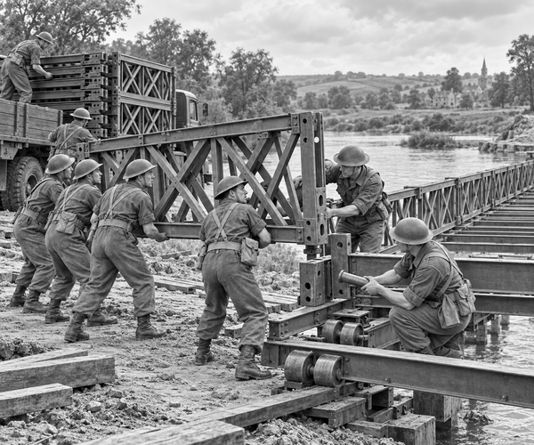

During World War Two, army trucks carried food, fuel and tools.
But a river could stop the whole convoy.
Sometimes an old bridge had been damaged.
Sometimes there had never been a bridge at all.
How could heavy vehicles cross?
The answer arrived on the backs of trucks.
It did not look like a bridge.
It looked like a pile of steel frames, beams and wooden boards.
These were the parts of a Bailey bridge.
The bridge was named after its designer, Donald Bailey.
He and his team developed it in Britain during World War Two.
Design fact: A Bailey bridge was made from standard parts. Trucks could carry the parts, and engineers could build them into bridges of different lengths and strengths.
Royal Engineers unloaded the first steel panel.
It was a large rectangle filled with strong diagonal bars.
Six men could carry one panel together.
“Lift!” called the team leader.
The panel rose from the truck.
Boots pressed into the soft ground.
The team placed it beside another panel.
The holes lined up.
A soldier pushed in a large steel pin.
Clang!
The two panels were joined.
More panels formed the other side.
Heavy cross-beams joined both sides together.
Smaller beams would support the road deck.
Everything fitted like a giant building set.
Yet the engineers were building on only one bank.
The river still rushed between them and the far side.
They could not lift the finished bridge over the water.
So they put the bridge on rollers.
Then they built a strange, thin shape at its front.
It was called the launching nose.
The nose had steel sides but no heavy road deck.
This made it lighter than the main bridge.
The team checked every pin.
They checked the rollers.
They checked the far bank.
At last, it was time to launch.
Men pushed from behind.
A truck helped very slowly.
The rollers began to turn.
Rumble. Creak. Rumble.
The launching nose moved out over the river.
For a moment, it seemed to float in the air.
More of the bridge rolled forwards.
The strong part behind balanced the light nose ahead.
Slowly, the nose reached the rollers on the far bank.
“Across!” called an engineer.
The team kept pushing.
The main bridge followed its nose over the water.
When it reached the correct place, the pushing stopped.
The engineers removed the light nose.
They lowered the bridge onto strong supports.
Wooden boards made the roadway.
Every pin, beam and board was checked again.
Bridge fact: Bailey bridges could be assembled without heavy lifting machines. Extra rows of panels could be added when a bridge needed more strength.
A test vehicle rolled onto the new crossing.
The steel sides held firm.
The wooden deck rumbled beneath its tyres.
Then the waiting trucks began to cross.
One by one, they reached the far bank.
The river had stopped the convoy.
But a bridge carried in pieces had opened the road again.
1. What carried the bridge pieces?
2. Why was the launching nose light?
3. What joined the side panels?